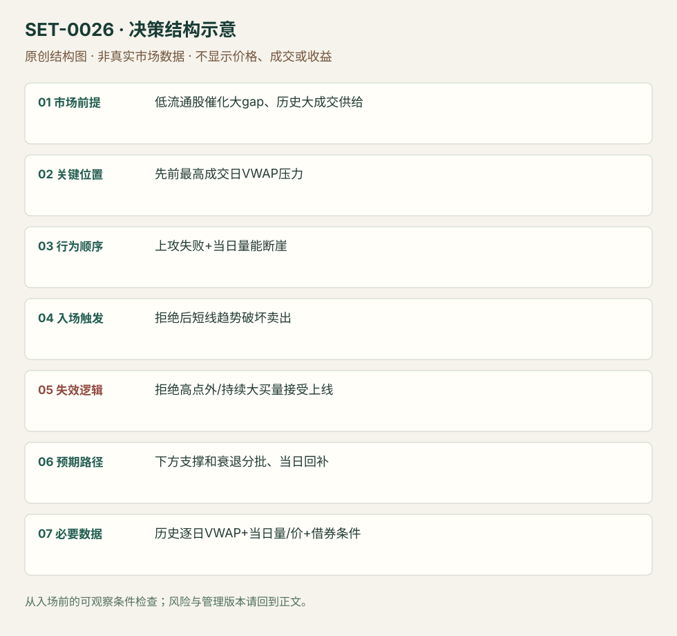

历史高成交日 VWAP 压力与量能断崖
VWAP Boulevard Short · SET-0026 · reviewed · v1.0.0
盈利证据：not_established。审查范围与来源版本见第13节；未知字段保留缺失原因。
1. 名称与快速概览
小盘催化股大幅跳空时，以先前最高成交日的 VWAP 作为潜在套牢供给参考；当上攻该区失败且量能明显退潮，做转弱的空头。这里的线不是今天的 VWAP。
记录口径：PA supporting；必要数据 OHLC、volume、historical_session_VWAP、premarket。名称性质：来源术语或研究术语。reviewed 只表示本条规则与证据记录审查通过，盈利状态为 not_established。
2. 本质与行为假说
历史高成交区可能留下供给是可检验假说，VWAP均价不能证明当前尚有多少套牢者。必须有当日失败和量变化；作者策略的 low float 和 gap 条件不能简化成任何锚定均价触碰。
3. 适用市场与环境
来源偏低流通股、很大gap（核心版本至少约50%），关注开盘至10:00前能否停滞和量断崖。若持续高量并越过历史压力，则原空头预期撤销。
来源实用市场：美国小盘个股。
Session：美股/ES现金参考段 09:30–16:00 America/New_York；收盘前平仓。期货夜盘单独建背景，不将其并入开盘区间。
跨市场：本版不主张已经验证的跨市场迁移；更换市场必须重定数据来源、流动性与session。
4. 出现前的观察清单
按来源回看高成交日并保存所选日、各日VWAP和日量，不能事后挑最准的一条。查催化、借券和当前价差，留盘前走势；借不到券属于不可执行，不是没有形态。
5. 形成过程与状态转换
高关注gap → 接近历史大成交VWAP → 推进失败/趋势转弱 → 当日量显著下降 → 空头触发 → 低量持续或重新强买入决定管理。
6. Entry trigger 与执行方式
来源按历史线附近被拒与趋势破坏建立空头。编辑可审查触发为拒绝后跌破当前反弹局部低点；仅碰线即卖是提前版。必须记录量断崖相对哪段，不以日后最终量柱定义。
7. Invalidation 与止损逻辑
拒绝高点外；若大成交恢复并被接受在线上方，撤销供给拒绝。实际空单需写回补与借券约束，不能将该线看成无限可靠的卖点。
8. Exit、target 与 trade management
随动量减弱减仓，参考盘前支撑/当日低点，强买入回来则退出；不因来源展示暴跌而要求每次拿到收盘最低。现金收盘前回补。
9. 常见 variations
历史线以上持续大成交可产生长方向，作为本方法失败/翻转场景记录；XSPA/VCNX/SPI不同股票不是新Setup。历史锚点选法是版本字段。
10. 失败方式与不交易条件
SPI式买量持续且保持高位；选错历史大成交日；仅有日量小却价格被接受上涨；借券费用/停牌使空头执行偏离；线附近波动反复导致追空。
11. 与相近 setups 的区别
12. 图表与案例解读
已看 XSPA 拒绝图和 SPI 持续强量图。XSPA显示3/8，完整年份来自文章；图内本地时间与纽约现金时间映射未核实。SPI是空头预期的反例，不把它包装为成功空单。
- [VIS-000028] XSPA intraday #vwapboulevard rejection；定位：XSPA intraday #vwapboulevard rejection。黑线2.71为历史参考，接近后未越过，后续量衰退且价格转弱。 验证：chart_viewed。
- [VIS-000029] SPI 10am vwap test；定位：SPI volume remains high into 10am。SPI持续买量并强势高位，不能因遇线就空；失败边界示例。 验证：chart_viewed。


本地原创示意（VIS-000083，非真实市场数据）：

小屏阅读可打开原尺寸示意图并缩放。

此图用于对照识别顺序与风险定义；不计入真实案例覆盖率。
视觉材料元数据与查看范围
- VIS-000028 · real_source_chart / structure_and_trigger / chart_viewed
品种：XSPA；日期：2021-03-08；周期：1分钟，依文中描述；时区：未知/不适用
时区未在图中核对；来源图表不是成交审计 - VIS-000029 · real_source_chart / structure_and_trigger / chart_viewed
品种：SPI；日期：未知/不适用；周期：未知/不适用；时区：未知/不适用
日期未在图中核对；周期未在图中核对；时区未在图中核对；来源图表不是成交审计 - VIS-000083 · synthetic_structure_diagram / illustration_only / generated_not_market_evidence
品种：未知/不适用；日期：未知/不适用；周期：未知/不适用；时区：未知/不适用
无真实品种、日期或价格：这是结构示意
13. 证据、分歧与未知项
核心来自 TradingSim 对 @team3dstocks 方法的解释，独立佐证有限。文章包含 EYES 的2020正文与2021推文日期冲突，本条不靠该例定日期；没有看原推文视频或Level II回放。
- [EVD-000048] John McDowell / team3dstocks引用，《VWAP Boulevard: The Ultimate Day Trading Strategy for Low-Float Stocks [#vwapboulevard]》，SRC-0023；定位：Origins / Calculate VWAP Boulevard / SPI / XSPA / volume cliff。支持：取过去高成交日的VWAP为上方参考，低流通股大gap尝试失败且10点前量断崖，转弱做空；持续量上攻如SPI可失败。
- [EVD-000049] Al Hill / TradingSim，《The VWAP Indicator Ultimate Guide And Video》，SRC-0022；定位：VWAP Boulevard section。支持：同平台概览历史锚点应用；属于同家族交叉链接，不能算独立佐证。
审查边界：来源份数与独立核心核验分开；当前类别为 limited_single_family。正文中的概念、官方事实、衍生解说或同族资料只按其支持范围使用。
14. 可用于复盘的检查表
- ☐ 下单前的前提可核对：低流通股催化大gap、历史大成交供给
- ☐ 事前标记位置：先前最高成交日VWAP压力
- ☐ 行为按顺序出现：上攻失败+当日量能断崖
- ☐ 实际触发符合选定版本：拒绝后短线趋势破坏卖出
- ☐ 事先写明本次否定条件：拒绝高点外/持续大买量接受上线
- ☐ 目标/路径只用当时已知信息：下方支撑和衰退分批、当日回补
- ☐ 数据满足 历史逐日VWAP+当日量/价+借券条件；记录时间、点差、滑点、队列和未成交
- ☐ 记录截止平仓及规则偏离；正常亏损不事后改成“未成立”
15. 后续验证问题
历史均价供给的选择规则能否前瞻固定？借券成本后哪些市值区间有效？量断崖按分钟时间归一化是否必要？
双向相关导航
- SET-0025 平衡日的 VWAP 过度偏离回归 0025 使用今天平VWAP并回到均价；本条历史高成交日线只是潜在供给参考。
- SET-0021 盘前高点的开盘动量突破 0021 开盘强买量突破PMH，本条寻找这类动量失败后的历史压力拒绝，但两者不能只因做多/做空而算同一交易。